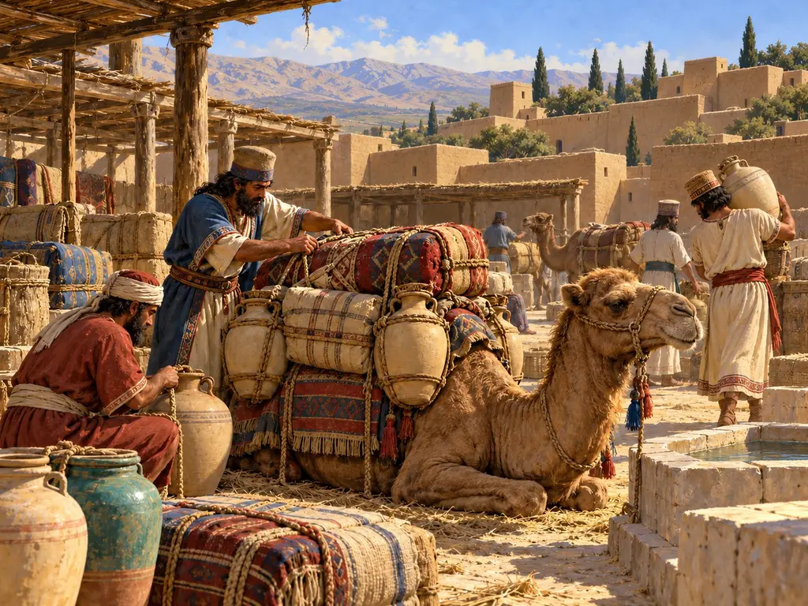
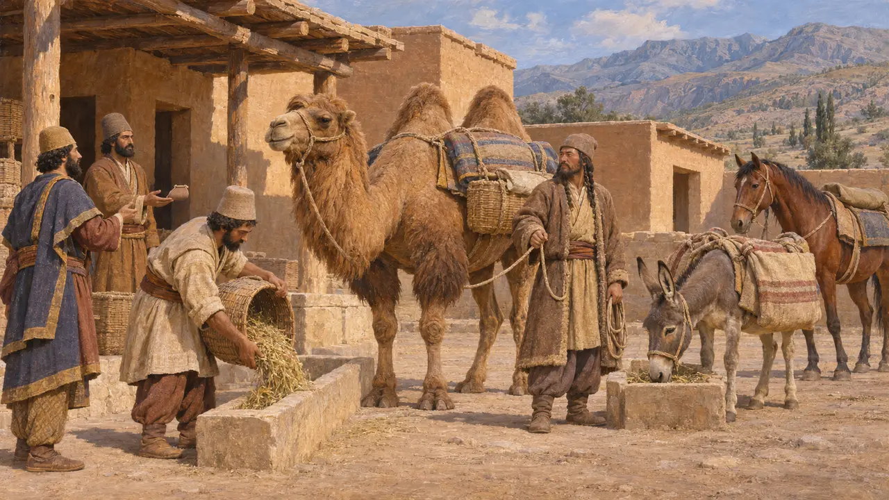
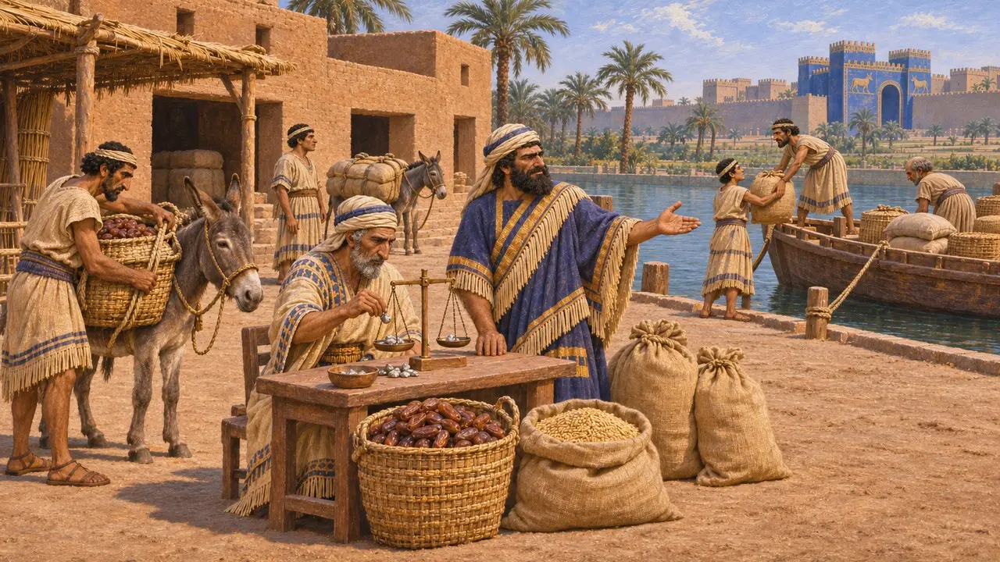
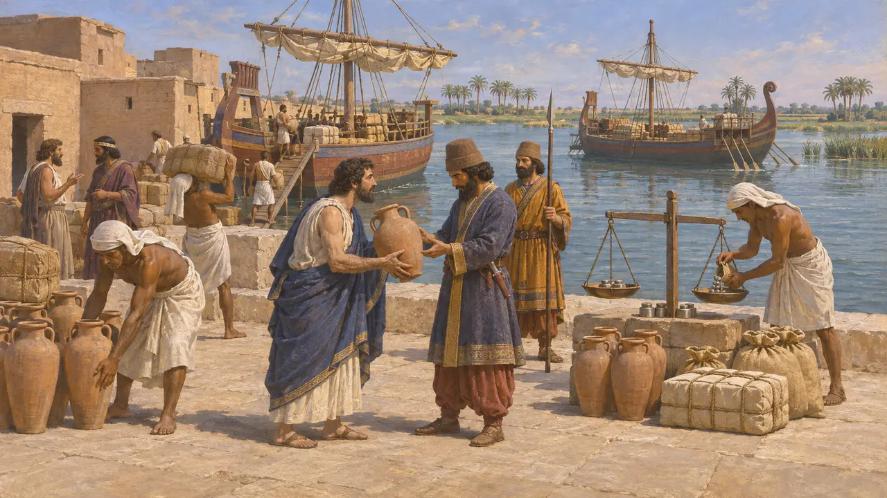
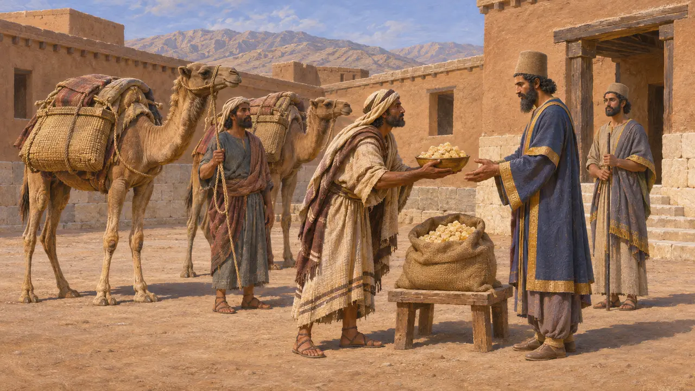
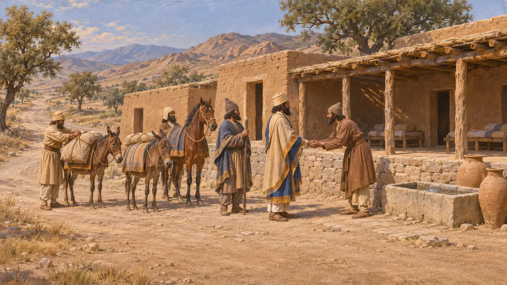

Caravan Yard
Overland trade and pack-animal transport in the Achaemenid empire, about 550-479 BCE
In the game: Level 1: The Founder's Tomb
Goods crossed the Persian empire on donkeys, mules and camels along roads that the King's administration kept and supervised. Long-distance trade was mostly run by private merchants and temple households, while the state profited by taxing it and by moving its own stores of grain, wine and silver.
In the game: The Caravan Yard lets the player set each good to off, import or export, and royal caravans then buy and sell there. This is a simplification: the sources point to trade run by private merchants and taxed by the King, not royal caravans trading with towns.

Pack animals on the King's roads
In the recordThe Persepolis Fortification tablets record parties travelling under sealed authorisations and drawing rations at stations along the roads of Persis and Elam. Donkeys, horses and camels appear in these texts as working animals with their own fodder allowances. On the Apadana reliefs at Persepolis, delegations such as the Bactrians lead two-humped camels as gifts for the King.
R. Hallock, Persepolis Fortification Tablets, 1969; Apadana reliefs, Persepolis

Merchants of Babylonia
In the recordThe Egibi archive of Babylon shows a family firm that lent silver, rented land and traded in dates, barley and other goods under Cyrus, Cambyses and Darius. Babylonian contracts often describe business partnerships with the word harranu, which also means road or journey. Such firms moved much of their goods by boat along the rivers and canals as well as overland.
K. Abraham, Business and Politics under the Persian Empire, 2004

Customs on traded goods
In the recordAn Aramaic customs account from Egypt, probably dated to Xerxes' eleventh year, about 475 BCE, lists Ionian and Phoenician ships arriving at a port and the duties taken from their cargoes for the royal house. It is a sea-trade record, but it shows how the administration taxed commerce rather than running it itself.
B. Porten and A. Yardeni, Textbook of Aramaic Documents from Ancient Egypt, vol. 3, 1993, TAD C3.7

Greek views of Persian trade
Ancient accountHerodotus says Cyrus mocked the Greeks for their marketplaces, and he claims the Persians did not use markets at all. He also reports that Persians called Darius a shopkeeper because he fixed regular tribute. He tells of camels brought to the field at Sardis, and of the Arabs paying their yearly gift to the King in frankincense, which he describes as a product of Arabia.
Herodotus 1.80; 1.153; 3.89; 3.97; 3.107

Road stations or caravanserais
DisputedHerodotus describes royal stations with good lodgings along the road from Sardis to Susa. The walled caravanserai built for traders is a much later form, and historians debate whether private merchants could use the King's stations. The tablets mostly record official travellers.
Herodotus 5.52; P. Briant, From Cyrus to Alexander, 2002
Sources
- P. Briant, From Cyrus to Alexander, 2002
- R. Hallock, Persepolis Fortification Tablets, 1969
- K. Abraham, Business and Politics under the Persian Empire, 2004
- B. Porten and A. Yardeni, Textbook of Aramaic Documents from Ancient Egypt, vol. 3, 1993
- Herodotus, Histories